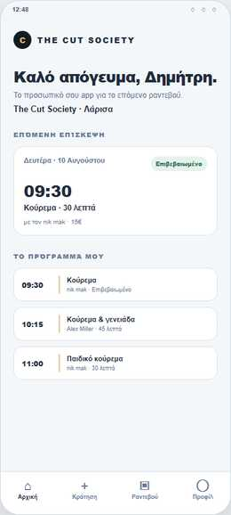
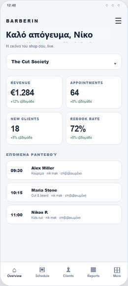
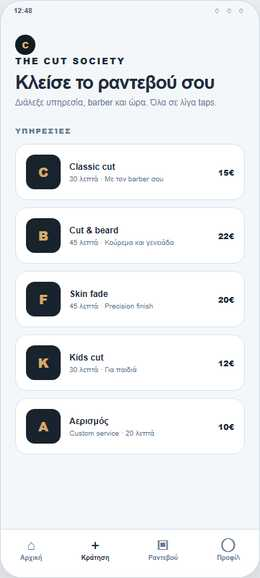
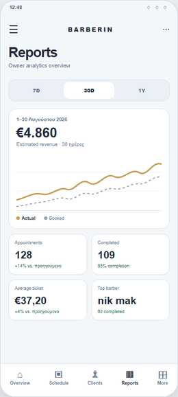

YOUR BARBER SHOP / YOUR APPS
Το barber shop σου δεν χρειάζεται άλλη μία καταχώριση. Χρειάζεται το δικό του app.
Το Barberin δημιουργεί μια customer εφαρμογή με το όνομα και το brand του καταστήματός σου, μαζί με το owner app για ιδιοκτήτες και barbers που θέλουν πλήρη, live έλεγχο των ραντεβού και της λειτουργίας τους.


SMART BOOKING ENGINE
Το customer app κλείνει. Το Barberin οργανώνει.
Τα ραντεβού κλείνονται απευθείας μέσα από το εξατομικευμένο app του barber shop σου. Το Barberin owner app και το backend διαχειρίζονται όλη τη ροή live, ώστε να δουλεύεις χωρίς τηλεφωνήματα, χειροκίνητους υπολογισμούς και περιττές καθυστερήσεις.
Κράτηση 24/7
Ο πελάτης επιλέγει υπηρεσία, barber, ημέρα και ώρα από το δικό σου customer app, χωρίς να διακόπτει τη δουλειά σου για ένα τηλεφώνημα.
Πραγματική διάρκεια
Η διαθεσιμότητα υπολογίζεται από τη διάρκεια της υπηρεσίας και των συνδυασμών της. Το επόμενο ραντεβού μπορεί να ξεκινήσει αμέσως μόλις τελειώσει το προηγούμενο, χωρίς τεχνητά κενά.
Όλοι οι κανόνες μαζί
Υπολογίζονται το προσωπικό ωράριο κάθε barber, τα διαλείμματα, οι κλειστές ημέρες, οι αργίες, η χωρητικότητα ανά slot και τα ήδη ενεργά ραντεβού.
Live προστασία κράτησης
Πριν αποθηκευτεί ένα ραντεβού, το σύστημα ελέγχει ξανά ότι το slot παραμένει διαθέσιμο. Αν έχει κλειστεί στο μεταξύ, προτείνει επόμενες πραγματικές επιλογές.
THE DIFFERENCE
Ο πελάτης ανοίγει το barber shop σου. Όχι έναν γενικό κατάλογο.
Το app είναι χτισμένο γύρω από το δικό σου όνομα, τη δική σου ομάδα και τον δικό σου τρόπο δουλειάς. Η εμπειρία ξεκινά και τελειώνει στο brand σου.
Ο πελάτης κλείνει απευθείας, χωρίς να ψάχνει ανάμεσα σε άλλα μαγαζιά.
Το δικό σου όνομα, οι δικές σου υπηρεσίες και η δική σου εικόνα στην οθόνη του.
Ραντεβού, barbers, διαθεσιμότητα, υπηρεσίες και reports από ένα app.
Βλέπεις τι συμβαίνει σήμερα και τι χρειάζεται προσοχή, σε πραγματικό χρόνο.
TWO EXPERIENCES / ONE BARBER SHOP
Δύο εφαρμογές. Ένα πλήρες digital home.
Ο πελάτης έχει την προσωπική του εμπειρία. Εσύ έχεις το control center της επιχείρησης.

Customer app με το όνομα του barber shop σου
Ο πελάτης βλέπει το κατάστημά σου, τις υπηρεσίες σου, την ομάδα σου και τα διαθέσιμα slots. Κλείνει, βλέπει το ιστορικό του και λαμβάνει ενημερώσεις χωρίς να χρειάζεται τηλεφώνημα.
- Booking 24/7 με δικό σου brand
- Υπηρεσίες, barber και διαθεσιμότητα
- Επιβεβαιώσεις, αλλαγές και notifications

Barberin owner app για όλη τη λειτουργία
Το πρόγραμμα, τα ραντεβού, οι barbers, οι υπηρεσίες, οι αργίες, τα operational alerts και τα analytics μένουν σε ένα σημείο. Όχι απλώς για να βλέπεις. Για να αποφασίζεις.
- Live πρόγραμμα και manual appointments
- Reports, revenue και barber performance
- Customer intelligence και business snapshot
OWN THE RELATIONSHIP
Η διαφορά είναι ποιος μένει στο μυαλό του πελάτη.
HOW IT WORKS
Απλό για τον πελάτη. Απόλυτο για τον owner.
Στήνουμε την ταυτότητα
Όνομα, λογότυπο, υπηρεσίες, barbers, ωράρια και κανόνες του barber shop σου.
Ο πελάτης κλείνει
Ανοίγει τη δική σου εφαρμογή και βρίσκει το σωστό service και το σωστό slot.
Εσύ έχεις τον έλεγχο
Διαχειρίζεσαι live όλη την ημέρα και βλέπεις τι πραγματικά συμβαίνει στο μαγαζί.
BUILT FOR THE REAL DAY
Ό,τι χρειάζεται ένα σύγχρονο barber shop.
Ολοκληρωμένη διαχείριση ραντεβού
Online και manual appointments, πραγματική διάρκεια υπηρεσιών, barber-specific πρόγραμμα, live slots, rescheduling και blocked dates.
Η ομάδα σου, με τους κανόνες σου
Services Management, ανάθεση υπηρεσιών ανά barber, εβδομαδιαίο πρόγραμμα και ειδικές αργίες ή διακοπές.
Ενημέρωση τη στιγμή που χρειάζεται
Push και in-app notifications για confirm, reschedule, completed, no-show και cancel.
Η επιχείρηση σε καθαρή εικόνα
Revenue, completion rate, demand, customer intelligence, barber performance, financial clarity και operational alerts.
IN THE APP
Η εμπειρία όπως θα τη δει ο πελάτης και όπως θα τη διαχειριστείς εσύ.
SIMPLE, SERIOUS, CLEAR
Μία επένδυση στη δική σου σχέση με τον πελάτη.
QUESTIONS, ANSWERED
Όσα χρειάζεται να ξέρεις πριν ξεκινήσεις.
Τι ακριβώς αποκτά το barber shop μου;
Μια branded customer εφαρμογή για τους πελάτες σου και το Barberin owner app για τη διαχείριση της καθημερινής λειτουργίας, με το δικό σου όνομα και τις δικές σου ρυθμίσεις.
Η customer εφαρμογή έχει το όνομα και το logo του barber shop;
Ναι. Η εμπειρία, η παρουσίαση των υπηρεσιών και τα βασικά στοιχεία της εφαρμογής προσαρμόζονται στο brand του barber shop σου.
Τι κάνει ο πελάτης μέσα στην εφαρμογή;
Βλέπει υπηρεσίες και barbers, επιλέγει διαθέσιμη ημέρα και ώρα, κλείνει ραντεβού, βλέπει τα ραντεβού του και λαμβάνει ενημερώσεις για κάθε αλλαγή.
Τι κάνει ο owner μέσα στο Barberin;
Βλέπει το πρόγραμμα live, δημιουργεί manual appointments, αλλάζει ραντεβού, διαχειρίζεται την ομάδα και τις υπηρεσίες και έχει reports για την πορεία του barber shop.
Μπορώ να ορίσω διαφορετικό πρόγραμμα ανά barber;
Ναι. Το πρόγραμμα, η διαθεσιμότητα, τα slots και οι υπηρεσίες μπορούν να ακολουθούν τη λειτουργία κάθε barber.
Μπορώ να κλείσω μια ολόκληρη ημέρα ή περίοδο;
Ναι. Υπάρχουν κλειστές ημέρες, ελληνικές αργίες και διακοπές, με δυνατότητα για μεμονωμένη ημερομηνία ή διάστημα.
Οι υπηρεσίες είναι έτοιμες ή μπορώ να τις αλλάξω;
Το barber shop επιλέγει τις ενεργές υπηρεσίες, προσθέτει custom υπηρεσίες και, προαιρετικά, ορίζει ποιες υπηρεσίες προσφέρει κάθε barber.
Υπάρχουν χρεώσεις ανά ραντεβού;
Η συνδρομή είναι για τη χρήση της υπηρεσίας. Δεν σχεδιάζεται ως χρέωση ανά ραντεβού.
Μπορώ να έχω περισσότερα από ένα barber shop;
Ναι. Κάθε barber shop μπορεί να έχει τη δική του εφαρμογή και τη δική του συνδρομή, με κεντρική διαχείριση από το ίδιο owner registration.
Πώς εμφανίζεται η εφαρμογή στα stores;
Η εφαρμογή μπορεί να οργανωθεί με το brand του barber shop σου και διατίθεται σύμφωνα με τις διαδικασίες του App Store και του Google Play.
Χρειάζομαι τεχνικές γνώσεις;
Όχι. Συζητάμε τη λειτουργία του barber shop, ετοιμάζουμε το setup και σου παραδίδουμε ένα περιβάλλον που μπορείς να χρησιμοποιείς καθημερινά από το κινητό.
READY WHEN YOU ARE
Το επόμενο ραντεβού μπορεί να ξεκινά από το δικό σου app.
Πες μας λίγα πράγματα για το barber shop σου και θα σου δείξουμε πώς μπορεί να στηθεί.